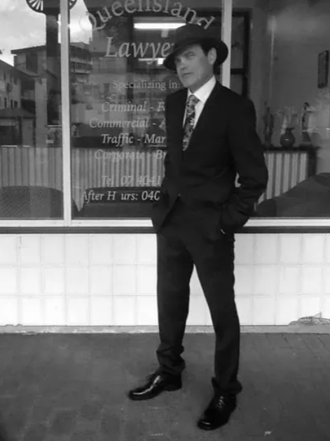

About Our Firm
Queensland Lawyers has earned its reputation for bold, courageous and fearless defence. Our Principal, Derek Perkins, brings over 29 years of criminal law experience, giving him an undeniable edge when dealing with police and the Director of Public Prosecutions.
Derek is a straightforward, down-to-earth lawyer who communicates clearly with people from all walks of life. He can meet with you at his offices or a location that suits you.
Our team offers thorough, cost-effective consultations—available seven days a week. We’ve defended clients across Queensland in a wide range of criminal matters, including:
- Serious Drug Crime
- Sex Offences
- Street Offences
- Computer Crime
- Criminal Offences (theft, assault, traffic offences)
- White-Collar Crime

Our Availability & Location
We are available to consult during business hours and, for your peace of mind, we remain contactable after hours and on weekends.
Facing a criminal charge is a serious matter that demands sharp guidance. Expect quick updates, practical advice, and a firm grasp of every step required to manage your case with strength.
Queensland Lawyers’ offices are located at (OFFICE LOCATION). We serve clients anywhere in Queensland.
If you need the best expert advice available on any criminal law matters, contact Derek directly on 0404 896 122.